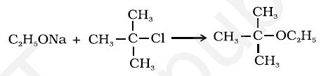

1. By dehydration of alcohols
Alcohols undergo dehydration in the presence of protic acids (H2SO4, H3PO4). The formation of the reaction product, alkene or ether depends on the reaction conditions. For example, ethanol is dehydrated to ethene in the presence of sulphuric acid at 443 K. At 413 K, ethoxyethane is the main product.Diethyl ether has been used widely as an inhalation anaesthetic. But due to its slow effect and an unpleasant recovery period, it has been replaced, as an anaesthetic, by other compounds.
The formation of ether is a nucleophilic bimolecular reaction (SN2) involving the attack of alcohol molecule on a protonated alcohol, as indicated below:

Acidic dehydration of alcohols, to give an alkene is also associated with substitution reaction to give an ether.
The method is suitable for the preparation of ethers having primary alkyl groups only. The alkyl group should be unhindered and the temperature be kept low. Otherwise the reaction favours the formation of alkene. The reaction follows SN1 pathway when the alcohol is secondary or tertiary about which you will learn in higher classes. However, the dehydration of secondary and tertiary alcohols to give corresponding ethers is unsuccessful as elimination competes over substitution and as a consequence, alkenes are easily formed.Can you explain why is bimolecular dehydration not appropriate for the preparation of ethyl methyl ether?
Alexander William Williamson (1824–1904) was born in London of Scottish parents. In 1849, he became Professor of Chemistry at University College, London.
2. Williamson synthesis
It is an important laboratory method for the preparation of symmetrical and unsymmetrical ethers. In this method, an alkyl halide is allowed to react with sodium alkoxide.
Ethers containing substituted alkyl groups (secondary or tertiary) may also be prepared by this method. The reaction involves SN2 attack of an alkoxide ion on primary alkyl halide.
Better results are obtained if the alkyl halide is primary. In case of secondary and tertiary alkyl halides, elimination competes over substitution. If a tertiary alkyl halide is used, an alkene is the only reaction product and no ether is formed. For example, the reaction of CH3ONa with (CH3)3C–Br gives exclusively 2-methylpropene.
Phenols are also converted to ethers by this method. In this, phenol is used as the phenoxide moiety.
The C-O bonds in ethers are polar and thus, ethers have a net dipole moment. The weak polarity of ethers do not appreciably affect their boiling points which are comparable to those of the alkanes of comparable molecular masses but are much lower than the boiling points of alcohols as shown in the following cases:
The large difference in boiling points of alcohols and ethers is due to the presence of hydrogen bonding in alcohols.
The miscibility of ethers with water resembles those of alcohols of the same molecular mass. Both ethoxyethane and butan-1-ol are miscible to almost the same extent i.e., 7.5 and 9 g per 100 mL water, respectively while pentane is essentially immiscible with water. Can you explain this observation ? This is due to the fact that just like alcohols, oxygen of ether can also form hydrogen bonds with water molecule as shown:1. Cleavage of C–O bond in ethers
Ethers are the least reactive of the functional groups. The cleavage of C-O bond in ethers takes place under drastic conditions with excess of hydrogen halides. The reaction of dialkyl ether gives two alkyl halide molecules.
Alkyl aryl ethers are cleaved at the alkyl-oxygen bond due to the more stable aryl-oxygen bond. The reaction yields phenol and alkyl halide.
Ethers with two different alkyl groups are also cleaved in the same manner.
The order of reactivity of hydrogen halides is as follows: HI > HBr > HCl. The cleavage of ethers takes place with concentrated HI or HBr at high temperature.
Mechanism
The reaction of an ether with concentrated HI starts with protonation of ether molecule.
Step 1: The reaction takes place with HBr or HI because these reagents are sufficiently acidic.
Step 2:
Iodide is a good nucleophile. It attacks the least substituted carbon of the oxonium ion formed in step 1 and displaces an alcohol molecule by SN2 mechanism. Thus, in the cleavage of mixed ethers with two different alkyl groups, the alcohol and alkyl iodide formed, depend on the nature of alkyl groups. When primary or secondary alkyl groups are present, it is the lower alkyl group that forms alkyl iodide (SN2 reaction).When HI is in excess and the reaction is carried out at high temperature, ethanol reacts with another molecule of HI and is converted to ethyl iodide.
Step 3:
However, when one of the alkyl group is a tertiary group, the halide formed is a tertiary halide.
It is because in step 2 of the reaction, the departure of leaving group (HO–CH3) creates a more stable carbocation [(CH3)3C+], and the reaction follows SN1 mechanism.
In case of anisole, methylphenyl oxonium ion, formed by protonation of ether. The bond between O–CH3 is weaker than the bond between O–C6H5 because the carbon of phenyl group is sp2 hybridised and there is a partial double bond character.
Therefore the attack by I– ion breaks O–CH3 bond to form CH3I. Phenols do not react further to give halides because the sp2 hybridised carbon of phenol cannot undergo nucleophilic substitution reaction needed for conversion to the halide.
Example 11.7
Give the major products that are formed by heating each of the following ethers with HI.
Solution
2. Electrophilic substitution
The alkoxy group (-OR) is ortho, para directing and activates the aromatic ring towards electrophilic substitution in the same way as in phenol.
(i) Halogenation: Phenylalkyl ethers undergo usual halogenation in the benzene ring, e.g., anisole undergoes bromination with bromine in ethanoic acid even in the absence of iron (III) bromide catalyst. It is due to the activation of benzene ring by the methoxy group. Para isomer is obtained in 90% yield.

(ii) Friedel-Crafts reaction: Anisole undergoes Friedel-Crafts reaction i.e., the alkyl and acyl groups are introduced at ortho and para positions by reaction with alkyl halide and acyl halide in the presence of anhydrous aluminium chloride (a Lewis acid) as catalyst.
(iii) Nitration: Anisole reacts with a mixture of concentrated sulphuric and nitric acids to yield a mixture of ortho and para nitroanisole.
11.12 Predict the products of the following reactions: